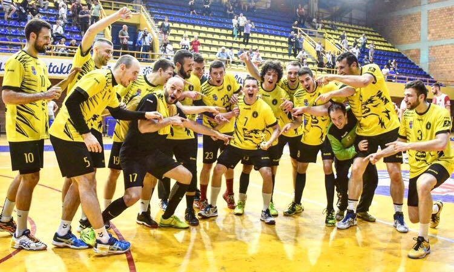

I was born on 16.07.1996. in Belgrade, Serbia and have been living here my whole life. After elementary school, I went to Fifth Belgrade Gymnasium . When the time came to go to university, my first choice was to start studying computer science. Ever since I was a kid, I was highly interested in technology, and quite honestly, had a knack for it. I thought that learning programming would ensure a solid career; both financially gratifying and personally fulfilling - so I started studying computer science at RAF . Soon, I realized that my passion towards understanding the human mind and emotions, as well as helping people, was too strong to be ignored, which is why after a year of studying computer science, I transferred to Faculty of Media and Communications to study Psychology, and eventually graduated in 2020.
As important as education was to me growing up, so was pursuing my sports career. I started playing handball while I was still in elementary school, and worked my way up to a professional level. My "pro days" started as early as 2014, while I was still in middle school. Throughout my whole studies at FMK, I was playing handball professionaly. I played my whole professional career as a middle back ("playmaker") at HC Dinamo Pancevo . I've started from the bottom with that team, and in just 5 short years, we managed to secure the greatest accomplishment in the history of that club by claming vice-champion title of Serbian Super League in 2016, and doing so, qualifying to participate in the best regional SEHA League in 2017.

Although I'd hoped to pursue an international career, unfortunately, I got badly injured in the third game when we started playin in SEHA League. I had a procedure on my right shoulder. Being that I shot the ball with my right hand, and that there was no way to fully recover my shoulder, I made a decision to retire and pursue a career as a working professional. This happened in parallel with me graduating from FMK, which is what helped me make the hard decision. Soon after graduating and retiring, an opportunity arose for me to start working as a Sports Psychologist in the Serbian National Institute of Sport and Sports Medicine. This was an ideal chance to combine the best of both worlds. To somehow stay in sports and follow my calling as a psychologist. I've worked there for two years in which I psychologically assessed and advised over 2500 athletes of all ages and all possible sports. This is an experience I will never forget, as it helped shape the way I understand and communicate with people today.
After two years, I was looking for a new challenge. I wanted to find a place where I could take advantage of the skills I've mastered, but also learn more about what it's like working for a large, global corporation. Starting a new job as a Talent Acquisition Specialist in Syneos Health, a large CRO company, was exactly what I was looking for as my next career move. I've been working as a recruiter since September 2022. here. I can safely say that my knowledge and understanding of "business" has immensely grown.
Working here made me realize now is the time to get back to my technological side. In my day-to-day work, I rely immensely on gathering and analyzing data, extracting insights and using data to inform my decisions. I've also been working on global projects where I had the chance to do data analysis, visualise my findings and impact change. All this lead me to enroll in the International Master in Business Informatics programme within the University of Belgrade, Faculty of Economics and Business. Here, I'm hoping to acquire the necessary skills in business and data analysis, project management and programming, and basically set a strong foundation for further career growth.
| Position | Company | From | Till |
| Talent Acquisition Specialist | Syneos Health | 01.09.2022. | Present |
| Sports Psychologist | Serbian National Institute of Sport and Sports Medicine |
01.11.2020. | 31.08.2022. |